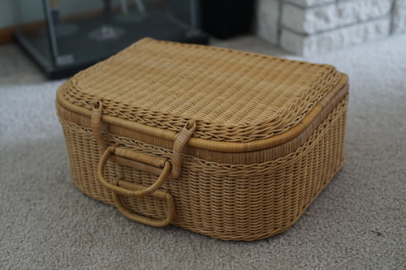
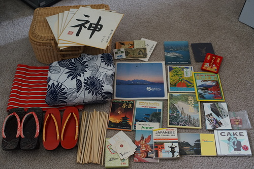
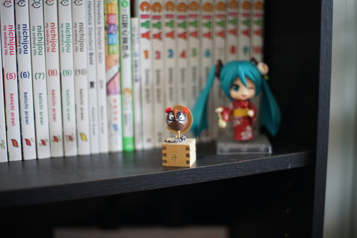
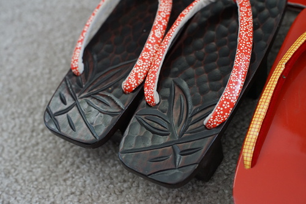
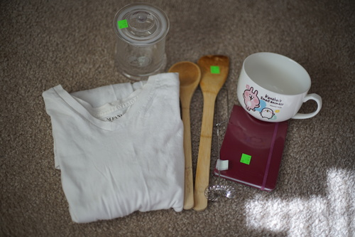

i came home and found a lovely komainu in my home!! ryan wont tell me where he found it but i love him!
i was at a yard sale that promised "designer" purses and found this basket. so i peeked inside and saw 2 pairs of geta and a yukata. i asked how much it was and she said $5. sold.
i didnt really get a good look inside until i got back. i didnt really care what else was in there in the moment because i'm willing to spend $5 on a yukata.
it's about 400 cm long and 30 cm wide. unlined. im not a kimono pro so correct me if im wrong
im regarding these as trash unless someone corrects me
contains gween tea, 100 yen coin, 10 yen bill, calligraphy paper
these just look like they were thrown in. id guess theyre newer
at the same yard sale but not part of the set
also not part of the set
the attempt at a name is supposed to be "richelle". one of the notes written by the woman talks about how she couldn't eat the rice and seaweed she was served for breakfast so her hosts made her pizza instead.
i forgot to add this little tanuki to the picture!
i love the bamboo engravings on these geta! the bottoms are a little worn....
i went to goodwill and got Kokoro Connect v1 for $.50, a pair of Born loafers for $10, a stars n stripes Hollister sweater for $6, and a "denim" and lace dress for $4. didnt take a picture sorry...
and then back to the thrift store today. now that i'm documenting this it sounds like i have a problem...
for ryan!
ryan told me he wanted this jar when we were at the candy store back in october but it was $14...
i love this wisk style and i dont have my own (until now!)
god i am a weeaboo
in other news i got my mom to do my doubles and i think they are very cute! it only took us like 2 hours to decide where to put them. excited for them to heal so i can lay on my ears again... i forgot how hard it was to sleep when i had my first ones done in 2019...